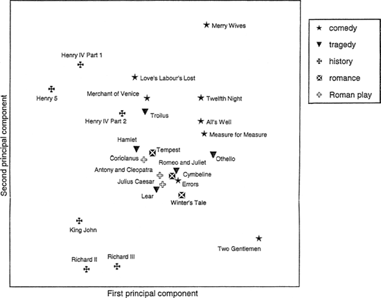

20.
Stylistic Analysis and Authorship Studies
Hugh Craig
Introduction
Stylistics and authorship studies are siblings with obvious differences and important underlying similarities. Stylistic analysis is open-ended and exploratory. It aims to bring to light patterns in style which influence readers' perceptions and relate to the disciplinary concerns of literary and linguistic interpretation. Authorship studies aim at "yes or no" resolutions to existing problems, and avoid perceptible features if possible, working at the base strata of language where imitation or deliberate variation can be ruled out. Authorship attribution has a forensic aspect – evidence of authorship based on Stylistics has been accepted in British courtrooms in particular – and this notion of determining a legally enforceable responsibility has given a particular intensity to scrutiny of its reliability. Yet stylistic analysis needs finally to pass the same tests of rigor, repeatability, and impartiality as authorship analysis if it is to offer new knowledge. And the measures and techniques of authorship studies must ultimately be explained in stylistic terms if they are to command assent.
In this chapter I offer first an example of a study in computational Stylistics to set the scene. Then I discuss the most important theoretical challenge to Stylistics, and go on to sketch a methodological basis for the practice. Turning to authorship attribution, I treat some underlying ideas about authorship itself, then theoretical issues in attribution studies, and finally some practical considerations.
Computational Stylistics aims to find patterns in language that are linked to the processes of writing and reading, and thus to "style" in the wider sense, but are not demonstrable without computational methods. We might, for instance, wish to examine patterns of association and difference among Shakespeare plays, based on their spoken dialogue. In these plays there are the obvious groupings of genre, and chronological divisions into early, middle, and late. There are clusters which have been intensively discussed by critics at various times, like the "problem plays" and the "four great tragedies." But how would the plays arrange themselves if only internal and empirical evidence was used? With the idea of starting with as few presumptions as possible, we take twenty-five Shakespeare plays (a good proportion of the thirty-eight complete plays normally included in a Complete Shakespeare) and calculate which are the dozen most common words in them overall. We can make a table of counts of each of these twelve words in each of the twenty-five plays.
Principal components analysis (PCA) is a statistical technique much used in computational stylistics for analyzing the variation in a table like this. It creates new composite variables which are combinations of the original ones, with each of the latter given a separate weighting. The aim is to simplify the data by finding a few new variables which account for most of the relationships revealed by the table. To take a commonplace example, it might turn out that after collecting statistics on individuals' height and weight in a sample the two prove to be so closely related that a single new variable, size – height times weight, a composite of the original two – represents most of the variation. PCA vectors, "principal components", are an extension of this principle. The weightings in a component are worked out so as to create, first, the vector which accounts for the greatest proportion of the variance in the original table. Then the procedure finds a second independent vector which accounts for the next greatest proportion, and so on. If there are strong associations between variables, then the first few of these new composite variables will account for most of what is going on. In the Shakespeare plays table the first principal component accounts for 33 percent of the total variance, and the second for 19 percent, so we are justified in thinking that there are strong associations and contrasts in the way the variables behave. If there were not, and the variation was purely random, then we could expect each of the twelve principal components to have shared the variation equally, i.e., to account for around 8 percent. The first step is to look at the variable scores relative to each other on the first and second principal components, as in Figure 20.1.
Looking at the X axis first, the highest score is for frequencies of I; those of is, you, and it are most closely associated with it. These variables evidently behave like each other – in plays where one of them is notably frequent, the others tend to be frequent too, and where one of them is notably scarce, the others will tend to be scarce also. At the other end, of is the extreme, associated with and and the. The first vector would seem to be a contrast between the variables which are associated with interactive dialogue, where pronouns like / and you are very common, and those associated with description and narration. The plays can also be given scores on the same principal components, as in Figure 20.2. The contrast along the X axis here emerges as one between the history plays and the others. All the history plays included are to the left of the rest. This fits well with the idea that the first principal component, the most important line of difference through the plays, is a contrast between plays in which description and its associated function words is stronger and those where interaction between characters predominates. Comedy and tragedy do not therefore present the biggest contrast in Shakespearean dialogue in these terms. Both the comedy and the tragedy groups are well mixed on the first axis. Within the comedy group the range is from Love's Labour's Lost (most disquisitory) to Two Gentlemen of Verona (most interactive); within the tragedies the range is from Hamlet to Othello. (Here, as very often in computational stylistics, we are relating two kinds of variables: fixed, externally determined attributes of the particular text like genre, known as independent variables, and counts of internal features, which are dependent variables. Correlation of the first with the second is the primary tool of computational stylistics.)
Figure 20.1 Variable weightings in a PCA of 12 word-variables in 25 shakespeare plays
The second component, the vertical axis in the graphs, runs from to to a and from Richard II to Merry Wives of Windsor. High frequencies of to indicate a formal style (infinitives and prepositional uses contribute equally, and one arises through more complex constructions, the other by more precise specification), and high frequencies of a are associated with a more casual one. Once the disquisitory-interactive differences are accounted for, it seems that a high-style-low-style contrast is next most important in the plays. Along this axis the history plays are strung out rather than bunched together, Richard II most formal of all and Henry IV Part 1 close to the opposite, informal extreme. The second component is not associated with the regular generic categories.
Figure 20.1 and Figure 20.2 represent a sketch-map of the style of Shakespeare's plays, and of course raise more questions than they answer. In taking such a study beyond the sketch stage one would want to know how constant these patterns are when a play is added to the set or taken away, for instance, or if different variables are used, for instance by splitting to into infinitive, prepositional, and adverbial uses. In such work, a little paradoxically, one wants to be reassured by seeing patterns already familiar from the way the texts are usually discussed, yet also to be surprised so that they seem more than a restatement of the obvious. If the dispositions of these graphs do stand up to scrutiny, then they invite further exploration. The first principal component has many similarities with the factor that emerged as the strongest in Biber's 1988 study of a large mixed sample of modern English. Biber labels the factor "high informational density and exact informational content versus affective, interactional, and generalized content" (1988: 107). A similar contrast is dominant in a number of different studies of this kind, across many periods and text types. Should we think of this opposition as the fundamental one in categorizing texts? In Shakespeare studies the findings might be compared with Lancashire (1997), and the suggestion that the pattern of phrasal repetends indicates a segmentation of semantic knowledge in Shakespeare's mind between comedies and tragedies on the one hand and poetry and the histories on the other (1997: 182). Then, more locally still, one might ask what it is exactly that brings the two Richard plays together, which are from different tetralogies and not often discussed alongside each other, at the bottom of Figure 20.2. Again, what does it mean that six of the tragedies lie in a close cluster, occupying quite a narrow range on both of these components? The outliers on both axes are histories or comedies: tragedies are more middling in style, or more mixed (an important difference, which might be explored by looking at segments from within the plays).
Beyond these are questions of the design of the experiment. Why choose words, and why these words? Why choose plays, when one might choose oeuvres or periods as larger aggregations, or characters or scenes as segmentations, or some combination? How would the main lines of differentiation in a larger set of Elizabethan and Jacobean plays, going beyond Shakespeare, compare?
These are questions that are internal to stylistics, and can be answered in its own terms. There are other more fundamental ones. What, for example, is the status and nature of the axes of differences that the procedure has derived? They have a precise definition – each variable and each case has a score for each vector – but this says nothing about the stylistic context. Should an axis of this kind be regarded as a stylistic reality, figuring as part of the writing or the reading or hearing process, or just as an artifact of the method? Then, even if an axis of this kind is allotted some importance in relation to style, one must be cautious about describing it. Any departure from the purely enumerative ("I has the highest score on the first principal component") is an act of judgment and is open to question. Then, if we accept that the vector has an authentic relationship to style, and is adequately interpreted, one can still ask whether anything of interest has been gained in relation to the questions that interest those who read and study Shakespeare plays.
This example will indicate what is at stake in computational stylistics: at best, a powerful new line of evidence in long-contested questions of style; at worst, an elaborate display of meaningless patterning, and an awkward mismatch between words and numbers and the aesthetic and the statistical. For the moment we can note that this sort of work remains under challenge, and is still largely ignored by mainstream humanities disciplines. It is worth reflecting also that though all its procedures individually predate the digital age, the combination in this sort of analysis is inconceivable without the computer. The labor involved with counting features like instances of word-types by hand and processing the results with a multivariate procedure like PCA the same way, would rule out embarking on such a project. Indeed, with no way of assembling and manipulating counts of word-variables, researchers in earlier periods assumed that very common words varied in frequency only in trivial ways among texts (Ellegard 1962: 15–16).
A Challenge to Stylistics
Stanley Fish has provided the most root-and-branch challenge to stylistics. He finds the whole project of identifying formal structures in a text and then interpreting them in relation to its meaning so flawed as to make stylistics entirely vacuous. A central problem for Fish is the assumption that meaning resides within the text rather than being created as it is read. He argues that the formal features described by stylisticians are meaningless except in relation to the reader's perception of them within a reading situation. When abstracted from this setting they refer to nothing but themselves and so any further analysis of patterns within their use, or comparison with the use of others or in other texts, or relating of them to meaning, is entirely pointless. Fish does not deny that there may be formal features which can enable categorical classification such as authorship (and so he is less hostile to authorship studies using computational stylistics), but he insists that these features cannot offer any information of interest about the text – just as a fingerprint may efficiently identify an individual but reveal nothing about his or her personality.
The two essays on stylistics reprinted in Fish's 1980 book discuss work by stylisticians which he declares to be either circular, so that findings based on the analysis of formal features are simply restated in "slightly different terms" (1980: 71–2), or arbitrary, because there is no principled way to link the meaning asserted with the feature. This rules out any claims to objectivity, since either there is no necessary connection between the features observed and the interpretation asserted for them, or the interpretation is built into the choice and description of the features themselves. He can envisage a pure stylistics which confines itself to the description of formal features, or a confessedly impure stylistics which would make no claim to objectivity, but suggests that as practiced in the studies he analyzes it is worthless.
Fish should be compulsory reading for any beginning stylistician. His papers belong with Schoenbaum's (1966) book as sources for cautionary tales in poor method. Any worker in the field will have felt tempted to do as one study Fish describes does, and slide from labeling a verb "active" to calling it "dynamic." Fish's comment is that the first "locates the verb in a system of formal differences", while the second "semanticizes, even moralizes" it (1980: 81). Again, it does seem illegitimate to move from "syntactic preferences" to "habits of meaning" or "conceptual orientation" (1980: 75), because, as Fish demonstrates, the step from preferences to significance can be made in any number of equally legitimate directions.
Fish is speaking as a humanist: he sees stylistics as an attempt to make interpretation mechanical and thus to exclude the human. His affective stylistics, later modified so as to make the agent interpretative communities rather than individual readers, is intended to locate the study of meaning in the proper creators, readers, or groups of readers, rather than in the linguistic features themselves. This is an attempt to incorporate the insight that "formal units are always a function of the interpretive model one brings to bear (they are not 'in the text')" (1980: 13).
Fish wants to do more than ridicule the occasional excesses of stylistics: he wants to demolish it entirely. The urgency in his analysis comes from his distrust of the claims of stylistics to a special "scientific" validity and of what he sees as its underlying anti-humanist motivation, the exclusion of the human factor in reading and interpretation. It is possible, however, to propose an alternative motivation for stylistics, that is, the uncovering of patterns of language use which because of their "background" quality, or their emergence on a superhumanly wide scale, would otherwise not be noticed; and the testing of hypotheses about language use where some empirical validation seems possible and appropriate. An example of the former would be patterns of use of thou and you forms within one dramatist; an example of the latter would be curiosity about whether men and women write differently from one another. This need not be anti-humanist, since it would recognize the role of the interpreter in relating any empirically derived results to readers' experiences, and to the myriad ways in which texts participate in a culture.
A Methodological Basis for Stylistics
A well-founded computational stylistics works with tendencies rather than rules; the semantic operation of language is so variable that the relationship of feature to meaning can never be fixed. Each element, and each combination of elements, can be used in new contexts to mean new things. Yet there are also continuities and patterns. These require a mixed theory of meaning. A textual form has meaning in its local context, but also as part of a collective. Thus an instance of/ has a local meaning, a deixis in which the referent is the speaker, but also has a meaning as part of a wider abundance or scarcity of this pronoun in the text, reflecting a discourse more or less frequently framed as first-person expression.
Tendencies are best observed in multiple instances, and it is here that the superhuman reach and memory of the computer can be of most assistance. Computational stylistics is thus extensive by nature, and it may be that the greatest potential for important discoveries lies in large-scale comparisons, rather than in the intensive study which is the staple of traditional philology. An obvious example would be change in language over time, within a writer's career or more largely over a collective artistic enterprise, or between periods. There have been promising forays also into groupings of texts by gender and nationality.
Stylistics may be thought of as the epidemiology of textual study: its methods allow general conclusions about the relationship between variables. Those which have high counts together form a syndrome. Once this is identified, the researcher can seek out a mechanism to explain it, as medical researchers might isolate the cell pathology which lies behind the epidemiological link between the incidence of smoking and that of lung cancer.
Stylistics in its exploratory form has had a great deal in common with sociolinguistics, which relies on correlations between the frequency of linguistic features and categorical independent variables like class and gender, with the more or less explicit assumption that language patterns are explained by these independent variables. Individualist linguistics and cognitive Stylistics, on the other hand, are not entirely sympathetic with strictly quantitative work, since they share an underlying belief that the most important dimensions of individuality cannot be captured in a common grid of frequencies. Johnstone, for example, argues for the value of the qualitative as against the quantitative, for small as against large amounts of data, greater as against lesser detail, and the methods of cases and interpretation as against those of rules and instances (1996: 23–4). Stylistics is perhaps best seen as the offspring of Saussurean linguistics, prizing what she calls "the knowledge that can be modelled with rules and conventions" (1996: 188) both for categorical assignations (as in authorship studies) and for explorations of relations of form and meaning (as in Stylistics). The tension can be seen as one between an interest in the "more tractable explanatory variables" (1996: 15–16) favored for sociolinguistic study and a sense that these are not adequate to explain language behavior. For individualists, a full explanation returns to the irreducibly unique self-expression of the human agent. This kind of humanism links them with Fish, who finds the particular instance always triumphant in its circumstantial complexity over the rule which is imposed on it. In their practice both Johnstone and a practitioner of cognitive Stylistics like Lancashire favor a more conventional explication de texte, an intensive examination of a single passage, albeit against the background of a larger work or oeuvre. This Johnstone calls "modern philology" (1996: 180–8), and consciously aligns with the practice of literary criticism. In their practice the new individualists create a foundation for authorship attribution (via the motivation and practice of individual language users, or the nature of the cognitive process) but this is so extremely individualist that it militates against the kind of systematic comparison which has been the basic method of stylometrics and the more recent computational Stylistics.
There must be room both for the insight that any text, and any collection of texts, has elements which will never be reducible to tabular form, as well as for the knowledge that many of the elements of the individual case will form part of a pattern. There is a strong instinct in human beings to reduce complexity and to simplify: this is a survival mechanism. Rules of thumb can save a great deal of time and effort. Stylistics is born of this instinct. What seems hard to explain in the individual case may be easier to understand when it is seen in a larger context. If these elements can be put in tabular form, then one can harness the power of statistics and of numerous visualizing and schematizing tools to help in the process of finding patterns.
With a statistical method comes the possibility of falsifiability. This can be thought of in terms of a wager. If one researcher has a hunch about a literary problem – say, that drama written for the private theaters in the Shakespearean period is distinct in its style from that written for the public theaters – and bets a colleague that this is true, the wager can only be decided under strict conditions. The two will have to agree on how to judge difference; on which are clearly private-theater, and which clearly public-theater plays; and on how many of them amount to an adequate sample. Then the threshold conditions have to be agreed. What test will be used on what data from the plays, and which range of values will constitute difference, and which sameness, for the purposes of awarding the wager to one side or the other? Here random selection is a useful tool, in cases where it is not possible to use all the possible data, and both sides of a question will want to escape preconceptions about relevant attributes and groups.
This follows the lines of a more traditional, hypothesis-driven design. The alternative approach is through exploratory data analysis, in which the researcher changes all possible parameters in the search for a revealing finding. Performed with due cautions, this may lead to discoveries that might be obscured by the starting conditions of a more fixed study. As the cost in time of collecting data and manipulating it and presenting it visually has come down, the attractiveness of exploratory analysis has increased.
In a sense (as is often pointed out by critics) computational stylistics merely creates another text, which, far from doing away with or automating interpretation, itself requires it. But this secondary text is related to the first in a systematic and repeatable way, and may be revealing about it. It offers a new perspective on it, like a spectroscopic analysis. The unfamiliar and often elaborate and arcane presentation of the results of statistical study in stylistics should not obscure what it has in common with traditional practices. It is common in any analysis to move from relatively uncontroversial to relatively controversial observations. This definition of some readily agreed-on aspects of a text is a prelude to interpretation. These results may be gathered by hand, as in the observation that plays written by women tend to have more women characters, and that women characters in them are more likely to start and end a scene. In principle, work in computational stylistics is no different.
In recent years the most-used markers for computational stylistics have been function words. Other very common words which do not appear to be unduly sensitive to subject matter are also attractive. Then there are combinations of word-types: in Lancashire's terminology, the fixed phrase, collocation (pair of words within a certain number of words of each other), and word cluster (combination of word phrase and collocation) (Lancashire 1997: 172). Lancashire's understanding of language production as mostly instinctive, and based on an associative memory, leads him to highlight phrases as the key markers of idiolect – phrases of up to seven words since that is the limit of short-term or working memory. "We speak and write in chunks", he says (1997: 178–80). The existence of large commercial online full-text databases makes it now possible to use this kind of authorship marker against the background of a large corpus, which can show if any parallels between the phrases of a doubtful text and those of a target author are truly unusual. There are some sample studies in Jackson (2002). Among the other most important style markers have been choices among pairs of words which can be readily substituted for each other in a sentence, such as while and whilst, has and hath, on and upon, and the words used to begin sentences. McMenamin details a vast range of these markers; the range itself, and the dangers of arbitrary choices among them, have contributed to doubts about the overall validity of such studies (Furbank and Owens 1991).
The best method of guarding against these dangers is careful testing of the method alongside its application to the immediate problem. If the markers and procedures chosen provide an efficient separation of samples into authorial or other groups in a closely comparable set – ideally, drawn at random from the main set and then reserved for testing – then that provides a guide to the reliability of the method when it comes to the contested texts. Discriminant analysis, a method for data reduction with some similarities to PCA, provides a good illustration. Discriminant analysis provides a weighted vector which will maximize the separation between two groups of samples named in advance. The vector can then be held constant and a score can be worked out for a mystery segment. The procedure even supplies a probability that any given segment belongs to one group or the other. This seems ideal for authorship problems: simply provide some samples of author A, some of author B, calculate the Discriminant function, and then test any doubtful segment. Yet Discriminant results are notoriously optimistic: the separation of the segments into named groups is maximized, but we have no way of knowing if they are representative of the population of the works of Author A or B – which, in the fullest sense, is the range of works it was (or is) possible for Author A or B to write. There is the danger of "overtraining" – the method will work superbly for these particular samples, but what it is providing is exactly a separation of those samples, which may be a very different matter from a true authorial separation. Good practice, therefore, is to reserve some samples (as many as 10 percent) as test samples. They do not contribute to the "training" exercise, the formation of the function, and therefore are in the same position as the doubtful sample or samples. If these are correctly assigned to their group, or most of them are, then one can have some confidence that the result on the mystery sample is reliable. "Testing the test" in this way should be the first move in any statistical authorial experiment. The ease of use of statistical packages makes it possible to do a large amount of testing even with scarce data by "bootstrapping" – a single item can be withdrawn from the training set and tested, then returned to the set while a second is extracted and tested, and so on.
The claim for computational stylistics is that it makes available a class of evidence not otherwise accessible (i.e., not to the naked eye). This evidence is comparable to the evidence interpreters always use, if not to form their views, then at least to persuade others that they are true.
The computational varieties of stylistic analysis and authorship studies require some considerable immersion in traditional humanities disciplines (scholarly, i.e., bibliographical, literary-historical and textual; and critical, i.e., interpretative and theoretical); in humanities computing generally (in particular the compiling and editing of literary texts and assembling them into corpora); and statistical (involving the understanding of statistical techniques and the practicalities of statistics and spreadsheet programs). All three present enough challenges and large enough bodies of knowledge to occupy the working lifetimes of individual researchers by themselves. Most commonly, single practitioners are experts in one or possibly two areas, very rarely in three, and have to make do in various more or less satisfactory ways in a third. Often the requisite skills have been assembled in two practitioners (as in the case of Burrows and Love).
Authorship
Authorship attribution is as old as writing itself, and its history displays a fascinating variety of problems and solutions. Groupings of texts (Homer, the Bible, Shakespeare) may have been created at times when their coherence was not especially significant, but later generations have placed enormous importance on the difference between the canonical and the apocryphal in each case. The modern interest in authorship attribution derives from the Renaissance, when the availability of texts made comparative study possible, and a new critical spirit went with the linguistic and textual disciplines of Humanism. The demonstration by Lorenzo Valla in the fifteenth century that the Donation of Constantine, which gave the western part of the Roman Empire to Pope Sylvester, was a forgery, is perhaps the most famous example (Love 2002: 18–19).
In the modern era most texts come securely attributed on external evidence. The title page of the first edition announces the author, or some knowledgeable contemporary assigns the work to the author. Some exuberant authors include their name in the text itself, as Ben Jonson does in his ode to Lucius Gary and Henry Morison. These attributions may be a little deceptive in their straightforwardness – there are collaborators, editors, and writers of source materials to complicate matters – but for reasons of economy of effort such approximations (Charles Dickens wrote Great Expectations) are allowed to stand.
Then for texts without this explicit and decisive external evidence there are numerous considerations of topic, approach, attitudes, imagery, turns of phrase, and so on which have always served scholars as foundations for attributions. The balance between the credibility of this internal evidence and the external kind has swung back and forth. The 1960s were a low point for internal evidence, as a reaction to the undisciplined accumulation of parallel passages and the wholesale "disintegration" of canons like Shakespeare's. This skepticism about internal evidence can be seen in Schoenbaum's (1966) book and in the 1966 Erdman and Fogel collection.
Humanities computing is involved with a second generation of attribution based on internal evidence, depending on measuring stylistic features in the doubtful and other texts, and comparing the results. An interesting case study is the debate over attributing the Funerall Elegie for William Peter by W. S. to Shakespeare, which began with Foster's (1989) book. The only evidence in favor of the attribution was internal, and stylistic in the specialized sense, being quantitative on the one hand and concerned with largely unnoticed idiosyncracies of language on the other. Both sides of the debate agreed that the poem's style, in the more usual sense of the imagery, diction, and language use noticed by readers, was unlike canonical Shakespeare. The proponents of the attribution argued that since the quantitative and stylistic evidence was so strong, the generally held view of the "Shakespearean" would just have to change. (Recently, another candidate, John Ford, has been proposed, for whom there were none of the cognitive dissonances just mentioned, and whose work appears to satisfy both readers and stylisticians as a good match for the Elegie.)
Underpinning any interest in assigning authorship is a model of the author. Since the 1970s the traditional scholarly activity of determining authorship has been conducted with a certain unease, resulting from the work of the French post-structuralists Roland Barthes, Michel Foucault, and Jacques Derrida, who, in undermining what they saw as the bourgeois individual subject, displaced the author as the primary source of meaning for texts. In the literary sphere this individual subject had reached an apogee in the Romantic idea of the heroic individual author. Since structuralism, there has been more interest in the role of discourse, culture, and language itself in creating texts.
There are, as Furbank and Owens (1988) elaborate, special cautions which should attach to the activity of adding items to a canon. The more items included, the wider the canon, and the easier it is to add further ones (1988: 4). There is no such thing as adding a work temporarily to a canon (1988: 30). They urge resistance to the pressure to assign authors, since doing this has so many consequences for the canon to which the work is added: after all, "works do not need to be assigned to authors and it does not matter that anonymous works should remain anonymous" (1988: 30). It is not enough that a work is a "plausible" addition to a canon, since once added, works are very hard to subtract (1988: 15).
There is also a more traditional objection to the energy that has gone into attribution. In Erasmus's words in his edition of St Jerome, "What is so important about whose name is on a book, provided it is a good book?" (1992: 75). Erasmus's answer is that this may indeed not matter in the case of a mere playwright like Plautus, whose works he has discussed earlier (1992: 71), but is vital in the case of "sacred writers and pillars of the church" like Jerome. If "nonsense" by others is presented as the work of such writers, and the imposture is not detected, then readers are forced to remain silent about any doubts or to accept falsehood (1992: 76). (Erasmus's attribution methods are discussed in Love 2002: 19–22). A modern critic might argue that authorship is important even in the case of a dramatist like Plautus. Attaching a name to a work "changes its meaning by changing its context … certain kinds of meaning are conferred by its membership and position in the book or oeuvre. Hamlet by William Shakespeare is a different play from Hamlet by the Earl of Oxford or Francis Bacon" (Love 2002: 46). Kermode suggests that "a different and special form of attention" is paid to the work of a famous writer (quoted in Furbank and Owens 1988: 44). Even within the world of scholarship, discovery that an essay was not after all by an important thinker like Foucault would make a considerable difference (Love 2002: 96–7).
The signs are that models of authorship are evolving from the post-structuralist "author function", an intersection of discourses, toward a concept more influenced by the workings of cognitive faculties. If the long-term memory store of human beings works not systematically but by "casting out a line for any things directly or indirectly associated with the object of our search", then "the organisation of memories … reflects the person's own past experience and thought rather than a shared resource of cultural knowledge" and this would imply a "unique idiolect" for each individual's speech or writing (Lancashire 1997: 178).
Then there has been a renewed interest in the linguistics of the individual speaker, whose differences from other speakers, according to Johnstone, should be accorded "foundational status" (1996: 21). She shows that, even in highly constraining situations like academic discourse or conducting or answering a telephone survey, speakers tend to create an individual style, and to maintain this style across different discourse types. Sociolinguistics explains difference through social categories (most often class, gender, and race) or rhetorical ones (purpose and audience), but Johnstone argues that these should be seen as resources from which the individual constructs difference rather than the determinants of it (1996: ix-x). She is prepared to envisage a return to the Romantic view of the importance of the individual in language, overturning the highly influential arguments of Saussure that language study should concern itself with langue, the system of a language, rather than parole, the individual instance of language production (1996: 20) and challenging the prestige of abstract scientific laws which have meant that, in the words of Edward Sapir, "[t]he laws of syntax acquire a higher reality than the immediate reality of the stammerer who is trying 'to get himself across'" (quoted in Johnstone 1996: 20).
Theoretical Considerations for Attribution
The practicalities of attribution by stylistic means hinge on the question of the variation in the style of an author. In Sonnet 76 Shakespeare's speaker laments that he cannot vary his style in line with the poetic fashion, with the result that everything he writes is hopelessly easy to identify as his own, because it is "So far from variation or quick change." (There is a special reason in this case: he always writes on the same subject, on his beloved and his love.) In the eighteenth century, Alexander Pope thought that attributing authorship by style was foolish – on the grounds, it seems, that it was too easy for an author to "borrow" a style (quoted in Craig 1992: 199). Variation, in other words, was unlimited. Samuel Johnson later in the same century took the opposite point of view. His friend and biographer James Boswell asked him if everyone had their own style, just as everyone has a unique physiognomy and a unique handwriting. Johnson answered emphatically in the affirmative: "Why, Sir, I think every man whatever has a peculiar style, which may be discovered by nice examination and comparison with others: but a man must write a great deal to make his style obviously discernible" (quoted in Love 2002: 7).
The evidence from the vast activity in empirical work on authorship supports a qualified version of Johnson's view. An attribution to satisfy most standards of proof is possible on internal grounds provided the doubtful sample is of sufficient length, and sufficient samples for comparison in similar text types by candidate writers are available. It is reasonable to say that the extreme skeptics about "stylometry" or "non-traditional authorship attribution studies", those who suggested that it had similar claims to useful information about authorship to those of phrenology about personality (Love 2002: 155), have been proved wrong.
Statistics depends on structured variation – on finding patterns in the changes of items along measurable scales. It is easy to see that language samples must vary in all sorts of ways as different messages are composed and in different modes and styles. The claims of statistical authorship attribution rest on the idea that this variation is constrained by the cognitive faculties of the writer. The writer will compose various works in the same or different genres and over a more or less extended career. Language features must vary in frequency within his or her output. Chronology and genre are readily detectable as sources of change; readers might expect to tell the difference between early and late Henry James, or between the writing in a comic novel and a serious essay by the same writer. Play dialogue presents an expected sharp variation in style within the same work, which may contain old and young speakers, men and women, the rich and the poor, the witty and the dull, and so on. The approach to authorial idiolect through cognitive science and neurology offers its own reinforcement of the notion that different genres are treated differently, and that word-patterns can be acquired and also lost over a lifetime (Lancashire 1997: 182, and 1999: 744).
There is, however, evidence which suggests that authorial consistency is quite a strong factor in most eras, so that one can expect to find other sources of systematic variation nested within it. Early James and late James are different, but not so different as to override the difference between James and Thomas Hardy. The characters created by a single dramatist scatter on many variables, but the scatter may still be constrained enough so that their multidimensional "territory" does not overlap with a second dramatist of the same period writing in the same genres. There is contradictory evidence on this matter from empirical studies. Burrows (1991) shows that Henry Fielding's style in his parody of Samuel Richardson remained close enough to his usual pattern to group his parody, Sbamela, with his other writing, though it did move some way toward the style of Richardson himself. On the other side of the ledger is the case of Remain Gary, who in the 1970s wrote two novels under a pseudonym in an effort to escape the reception which he felt his established reputation influenced too heavily. These novels were successful, and indeed after the publication of the second of them Gary won a second Prix Goncourt under his nom de plume, Emile Ajar. Tirvengadum (1998) reports that in the second of the Ajar novels Gary was able to change his style so radically as to make the profile of his common-word usage distinct from that in his other work.
The search for stylistic markers which are outside the conscious control of the writer has led to a divergence between literary interpretation and stylometry, since, as Horton puts it, "the textual features that stand out to a literary scholar usually reflect a writer's conscious stylistic decisions and are thus open to imitation, deliberate or otherwise" (quoted in Lancashire 1998: 300). In support of these unconscious style markers are the studies that show that much of language production is done by parts of the brain which act in such swift and complex ways that they can be called a true linguistic unconscious (Crane 2001: 18). Lancashire (1997: 177) adds: "This is not to say that we cannot ourselves form a sentence mentally, edit it in memory, and then speak it or write it, just that the process is so arduous, time-consuming, and awkward that we seldom strive to use it."
Naturally it is incumbent on the researchers to show their audiences how markers invisible to writers or readers can be operative in texts at more than a narrowly statistical level, to avoid what Furbank and Owens call "the spectre of the meaningless" (1988: 181). As Love argues, a stylistic explanation for grouping or differentiating texts is always to be preferred to a stylometric or "black-box" one (2002: 110). Unlike most research in the humanities, results of the purely computational kind cannot be checked against the reader's recollection or fresh study of the texts: in principle, the only check is a replication of the statistical tests themselves.
Practical Considerations in Attribution
The first factor to consider in an authorship question is the number of candidates involved. There may be no obvious candidates indicated by external evidence; a group of candidates, from two to a very large but still defined number; or there may be a single candidate with an unlimited group of other possible authors. Commentators have generally been pessimistic about all but two-author problems. Furbank and Owens (1988), assessing the potential usefulness of quantitative stylistics in testing attributions in the very large group of texts associated with Daniel Defoe, concluded that these new methods "were not yet in a position to replace more traditional approaches" (1988: 183). They proceeded to work on external and purely qualitative internal evidence in establishing a revised Defoe canon. The most-cited successful attribution on quantitative measures, the assignation of a group of essays in The Federalist, is an adjudication between two candidates. The disputed papers could only have been written by Alexander Madison or John Hamilton; the problem was solved by Mosteller and Wallace (1964) using function-word markers.
There are grounds for optimism, on the other hand, that with advances in technique and in the availability of good-quality, well-suited data, attribution by computational stylistics can make a contribution even in complicated cases. Burrows (2002), for instance, reports success with a recently developed technique adapted for multiple-candidate problems. It establishes multiple authorial profiles and determines a distance from each of these to the target text, as a measure of which author's work the mystery piece is "least unlike."
The way forward would seem to be by a double movement: calibrating the reliability of attribution methods by good technique and sheer collective experience, and on the other hand, with the increasing availability of text for comparison, advancing on even the most difficult problems (especially those involving a single author as against an unlimited group of others, and searching for good candidates from a very large pool). It may be misguided to aim for complete certainty in attaching a single name to a doubtful text. There is, after all, much to be gained from eliminating one or more candidates, while remaining uncertain about the actual author, or narrowing authorship to a small group of names.
It may be useful to conclude with a brief list of commonly encountered pitfalls in authorial attribution by computational stylistics:
1 Assuming that, if groups separate according to author, the separation is authorial. This is obvious when one authorial group is all tragedies and the second comedies. Even if all texts are from the same genre, there must always be the question whether the difference is really between (say) comedies set in the city and those set in the court.
2 Assuming that parallels between elements of a doubtful text and a given author provide an argument for authorship when those elements may be found in any number of other authors outside the sample tested. This was the downfall of what Schoenbaum calls the "parallelographic school" (1966: 94).
3 Selecting those techniques, and those features, which favor one case, while ignoring others ("cherry-picking"). Furbank and Owens (1991: 243) put it this way: "any liberty to choose one test, rather than another for a given authorship problem will lay you open to incalculable, perhaps subliminal, temptations to choose the one that will help you to prove what you want to prove."
4 Assuming that an author cannot vary from his or her normal style when carrying out a particular assignment, or under a particular internal or external influence.
5 Using a new attribution, not yet generally accepted, as the basis for further attribu tions – what has been called in art-historical studies "the forging of chains", Friedlander's term for works in the visual arts added to an oeuvre on the basis of connoisseurship and then used to justify the addition of further works (cited in Furbank and Owens 1988: 47).
More positively, one might consider a set of ideal conditions for an attribution on stylistic grounds:
1 The doubtful text is long. (In the experiment in assigning Restoration poems to their authors described in Burrows (2002), reliability increases with sample length.)
2 There is a small number of candidates (two is ideal, as in the case of the federalist papers).
3 There is no significant involvement in the doubtful text by other writers as collabor ators or revisers, and very few changes have been made by third parties such as printers and editors between composition and the surviving texts.
4 There is a lot of securely attributed text by the candidates, in a similar genre and from a similar period to the doubtful text.
Purists would say that all these conditions must be met before a secure attribution can be made, but it may be more realistic to see a continuum of reliability to which all these conditions contribute. Attribution work may still yield valuable results, in eliminating some of the candidates, for example, where there are significant deficits in one or more of these conditions.
Conclusion
Computer-assisted stylistics and authorship studies are at an interesting stage. A remarkable range of studies has been built up; methods have been well calibrated by a variety of researchers on a variety of problems; and even if some studies have proved faulty, the vigorous discussion of their shortcomings is a resource for those who follow. Well-tested methods can now provide multiple approaches to a given problem, so that results can be triangulated and cross-checked. There is an ever-increasing volume of text available in machine-readable form: this means that a large purpose-built corpus can now be assembled quite quickly in many areas. There are enough successes to suggest that computational stylistics and non-traditional attribution have become essential tools, the first places one looks to for answers on very large questions of text patterning, and on difficult authorship problems. It is worth noting, too, that the lively debate provoked by computational work in stylistics and authorship is an indication that these activities are playing a significant part in a much wider contemporary discussion about the relations of the human and the mechanical.
References for Further Reading
Biber, D. (1988). Variation across Speech and Writing. Cambridge: Cambridge University Press.
Burrows, J. F. (1987). Computation into Criticism: A Study of Jane Austen and an Experiment in Method. Oxford: Clarendon Press.
Biber, D. (1991). "I lisp'd in numbers": Fielding, Richardson and the Appraisal of Statistical Evidence. Scriblerian and the Kit-Kats 23: 234–41.
Biber, D. (2002). "Delta": A Measure of Stylistic Difference and a Guide to Likely Authorship. Literary and Linguistic Computing 17: 267–87.
Burrows, J. F., and H. Love (1998). The Role of Stylistics in Attribution: Thomas Shadwell and "The Giants' War". Eighteenth Century Life 22: 18–30.
Craig, D. H. (1992). Authorial Styles and the Frequencies of Very Common Words: Jonson, Shakespeare, and the Additions to "The Spanish Tragedy." Style 26: 199–220.
Crane, M. T. (2001). Shakespeare's Brain: Reading with Cognitive Theory. Princeton, NJ: Princeton University Press.
Ellegård, Alvar (1962). A Statistical Method for Determining Authorship. Gothenburg: University of Gothenburg.
Erasmus, Desiderius (1992). Collected Works of Erasmus. Vol. 61. Patristic Scholarship: The Edition of St Jerome, ed. J. F. Brady and John C. Olin. Toronto: University of Toronto Press.
Erdman, David V. and Ephim G. Fogel, (eds.) (1966). Evidence for Authorship: Essays on Problems of Attribution. Ithaca, NY: Cornell University Press.
Fish, S. (1980). Is there a Text in this Class? The Authority of Interpretive Communities. Cambridge, MA: Harvard University Press.
Foster, Donald W (1989). Elegy by W. S.: A Study in Attribution. Newark, DE: University of Delaware Press.
Furbank, P. N. and W. R. Owens (1988). The Canonisation of Daniel Defoe. New Haven, CT: Yale University Press.
Furbank, P. N. and W. R. Owens (1991). Dangerous Relations. Scriblerian and the Kit-Kats 33: 242–4.
Jackson, MacD. P. (2002). Determining Authorship: A New Technique. Research Opportunities in Renaissance Drama 41: 1–14.
Johnstone, B. (1996). The Linguistic Individual: Self-Expression in Language and Linguistics. New York: Oxford University Press.
Lancashire, I. (1997). Empirically Determining Shakespeare's Idiolect. Shakespeare Studies 25: 171–85.
Lancashire, I. (1998). Paradigms of Authorship. Shakespeare Studies 26: 298–301.
Lancashire, I. (1999). Probing Shakespeare's Idiolect in Troilus and Cressida, 1.3.1–29. University of Toronto Quarterly 68: 728–67.
Love, Harold (2002). Attributing Authorship: An Introduction. Cambridge: Cambridge University Press.
McMenamin, G. (1993). Forensic Stylistics. Amsterdam: Elsevier.
Milic, Louis T. (1991). Progress in Stylistics: Theory, Statistics, Computers. Computers and the Humanities 25: 393–400.
Mosteller, F. and D. L. Wallace (1964). Inference and Disputed Authorship: The Federalist. Reading, MA: Addison-Wesley.
Schoenbaum, S. (1966). Internal Evidence and Elizabethan Dramatic Authorship: An Essay in Literary History and Method. London: Arnold.
Tirvengadum, Vina (1998). Linguistic Fingerprints and Literary Fraud. Computing in the Humanities Working Papers. Accessed November 1, 2002. At http://www.chass.utoronto.ca/epc/chwp/tirven/index.html.

{kind=link}
Figure 20.2 Scores for texts in a PCA of 12 word-variables in 25 Shakespeare plays